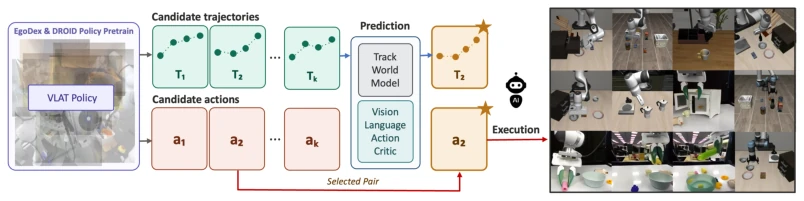
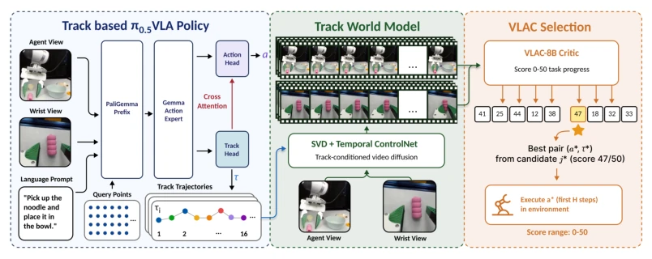
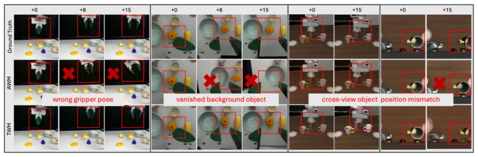
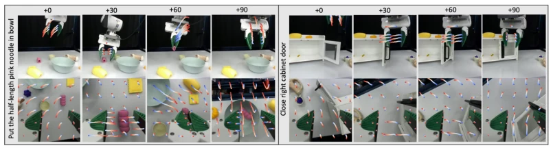
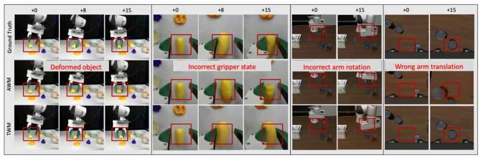
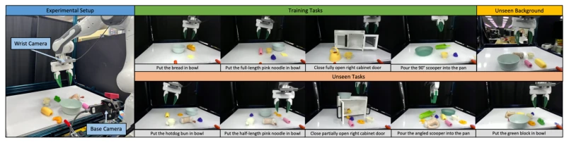
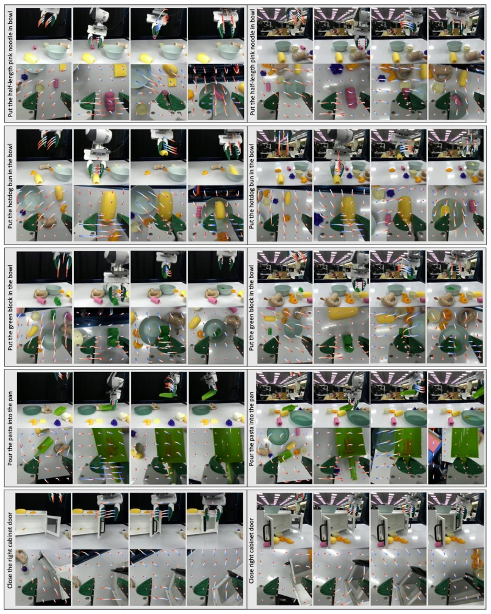
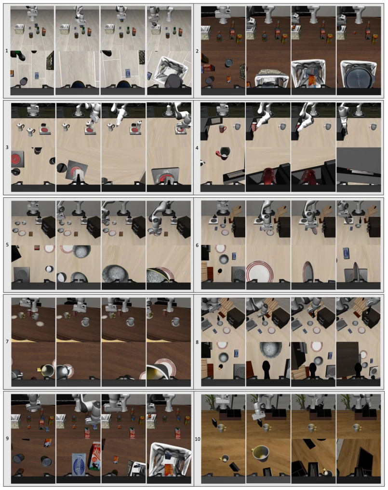
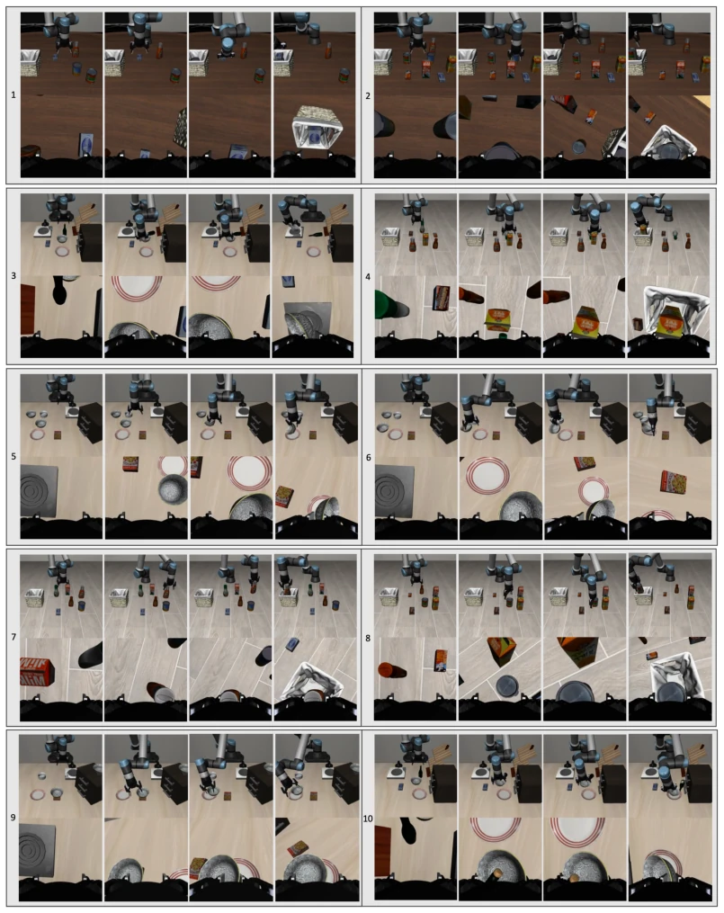

TrAct adds a "visual filter" to robot control by using 2D trajectories instead of actions as input to the world model, which is indeed a clever move. Since actions are robot-specific while trajectories are universal, it resolves the ambiguity of action-to-pixel mapping. Experimental results are impressive, with success rates improved on both LIBERO and real robots, particularly in generalization scenarios. However, the cost is significant; during inference, K video clips must be generated and scored, resulting in staggering computational overhead and raising concerns about real-time performance. Furthermore, it relies on CoTracker for trajectory extraction; if tracking fails, the entire pipeline collapses. This essentially trades compute for robustness, making it suitable for scenarios demanding high accuracy but insensitive to latency. If deployed on the edge in the future, it might achieve true practical application. This can be seen as adding a "world model brain" to VLA models, but the brain's thinking time is too long, potentially failing to keep up with the robot's hand speed.
Existing action-based world models (AWM) face a fundamental dilemma: action instructions are sparse and embodiment-specific, making it difficult to accurately map to pixel-level visual changes [1, 2, 3]. This causes models to often overlook erroneous actions or generate hallucinations [15]. Although VLA models such as π0.5 [5] demonstrate strong performance, open-loop control remains fragile to distribution shifts. Video generation models like Sora [6] possess physical understanding but lack the conditional signals necessary for precise control. This uncertainty in mapping restricts the decision-making capability of world models in complex tasks, hindering robots from maintaining robustness in unseen scenarios. TrAct attempts to employ visual tracks as an intermediate interface, as trajectories can decouple motion from rendering, capture object interaction geometry, and provide denser image-space guidance compared to actions, thereby enhancing prediction accuracy and generalization ability.

Figure 1: Overview of TrAct. TrAct uses VLAT (left, purple), pretrained on large-scale cross- embodiment data, to propose candidate action–track pairs. TWM (middle, gray) rolls out the visual outcome for each candidate conditioned on the tracks, and VLAC (middle, green) selects the highest- reward rollout; the robot executes the paired action. Visual tracks thus serve as an intermediate interface between future prediction and robot control. We evaluate TrAct on diverse simulation and physical robot tasks (right).
The TrAct framework consists of three steps: generation, prediction, and evaluation. First, the VLAT model is modified based on π0.5 [5], simultaneously outputting action chunks and 2D point trajectories (gripper vertices + scene grid points), utilizing joint flow matching optimization and pre-trained on large-scale data from DROID and EgoDex. Second, the TWM world model generates future videos conditioned on trajectories, employing ControlNet to encode trajectory coordinates into spatial control maps, distinguishing different viewpoints (agent/wrist), providing denser visual guidance than actions, and addressing visual drift caused by action conditioning. Finally, the VLAC reward model (based on InternVL2 [35]) scores the generated video clips, selecting the action corresponding to the trajectory that best aligns with the instruction for execution. During inference, temperature scaling resampling (TSR) ensures candidate diversity, maintaining a balance between exploration and exploitation. The entire workflow decouples control and prediction, achieving more precise decision-making through the trajectory intermediate layer.

Figure 2: Overview of the TrAct framework. Given an observation ot and language instruction l, the VLAT model jointly predicts K candidate actions and corresponding visual tracks. Each set of predicted tracks conditions a world model to generate future video frames. A VLM-based reward model scores the predicted outcomes and selects the action whose rollout best fits the instruction.
Tested on LIBERO-INTEGRAL and Franka real robots. Comparison baselines include π0.5 [5], VLAT, and action-conditioned world models (AWM). In simulation, TrAct's success rate improved from 27% to 55%, and on real robots from 49% to 76%. Regarding video generation quality, TWM significantly outperforms AWM in both PSNR and LPIPS, demonstrating greater robustness especially under cross-view and background variations. Ablation studies show that trajectory conditioning resists visual domain shifts better than action conditioning. Furthermore, in UR5 cross-embodiment tasks, TrAct achieves the best performance, demonstrating the generalization of trajectory representation. The experiments also verify robustness across different backgrounds; TrAct performs stably on unseen backgrounds, whereas AWM drops significantly, indicating that trajectories indeed provide more fundamental motion priors.

Figure 3: Qualitative video comparison. TWM produces more spatially accurate and motion- coherent frames than AWM across both agent-view and wrist-view cameras.

Figure 4: Rollout Demonstrations of two tasks: put the half-length pink noodle in the bowl (left) and close the right cabinet door (right). Each step is overlaid with track predictions.

Figure 5: Additional Qualitative video comparison. TWM continues to produce more spatially accurate and motion-coherent frames than AWM across both agent-view and wrist-view cameras.

Figure 6: Overview of the physical experiments. We use a base and wrist-view camera and fine- tune the model on four training tasks. We then test five out-of-distribution tasks, as well as an unseen background for each task.

Figure 7: Rollout examples Rollout with four key frames showing 16-horizon track predictions under the training background (left) and unseen background (right). Task list from top row to bottom row: put the half-length pink noodle in the bowl (1), put the hotdog bun in the bowl (2), put the green brick in the bowl (3), pour the angled scooper’s pasta into the pan (4), and close the partially open right cabinet door (5).

Figure 8: Rollout examples Rollout with four key frames. Task list from top row to bottom row, left to right column: pick the alphabet soup and place it in the basket (1), put both the cream cheese box and the butter in the basket (2), put both moka pots on the stove (3), put the yellow and white mug in the microwave and close it (4), pick the akita black bowl next to the ramekin and place it on the plate (5), put the plate on the stove (6), put the white mug on the left plate and put the yellow and white mug on the right plate (7), put the wine bottle on the top of the drawer (8), put both the cream cheese box and the butter in the basket (9), and pick up the book and place it in the back compartment of the caddy (10).

Figure 9: UR5 Rollout examples Rollout with four key frames. Task list from top row to bottom row, left to right column: put both the alphabet soup and the cream cheese box in the basket (1), put both the alphabet soup and the tomato sauce in the basket (2), put the bowl on the stove (3), pick the orange juice and place it in the basket (4), pick the akita black bowl between the plate and the ramekin and place it on the plate (5), pick the akita black bowl next to the plate and place it on the plate (6), pick the ketchup and place it in the basket (7), pick the tomato sauce and place it in the basket (8), pick the akita black bowl on the cookies box and place it on the plate (9), and put the bowl on the plate (10).